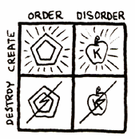
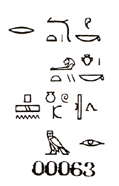

|
THE CURSE OF GREYFACE AND THE
INTRODUCTION OF NEGATIVISM
To choose order over disorder, or disorder over order, is to accept a trip composed of both the creative and the destructive. But to choose the creative over the destructive is an all-creative trip composed of both order and disorder. To accomplish this, one need only accept creative disorder along with, and equal to, creative order, and also willing to reject destructive order as an undesirable equal to destructive disorder.
The Curse of Greyface included the division of life into order/disorder as the essential positive/negative polarity, instead of building a game foundation with creative/destructive as the essential positive/negative. He has thereby caused humanity to endure the destructive aspects of order and has prevented humanity from effectively participating in the creative uses of disorder. Civilization reflects this unfortunate division.

 POEE proclaims that the other division is preferable, and we work toward the proposition that creative disorder, like creative order, is possible and desirable; and that destructive order, like destructive disorder, is unnecessary and undesirable.
Seek the Sacred Chao - therein you will find the foolishness of all ORDER/DISORDER. They are the same!
|